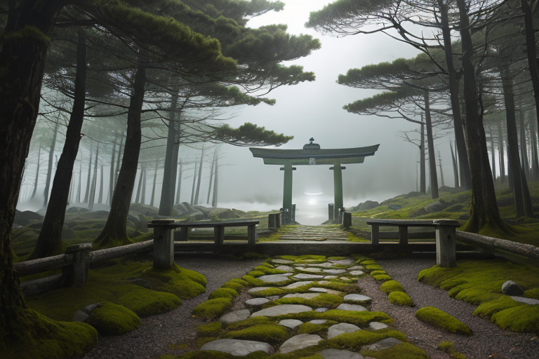
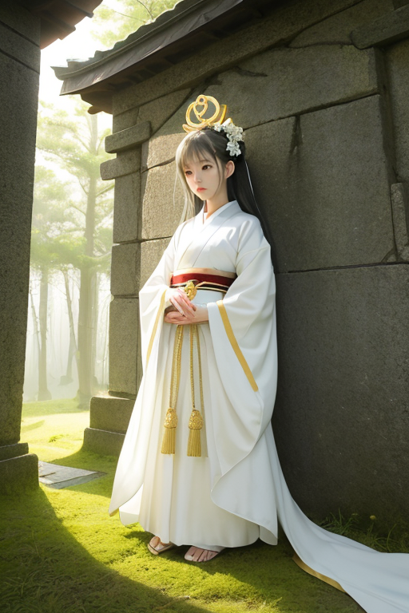
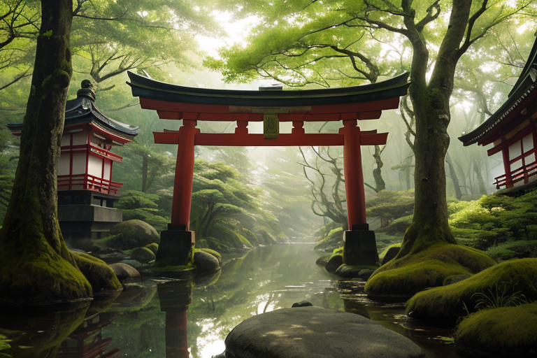
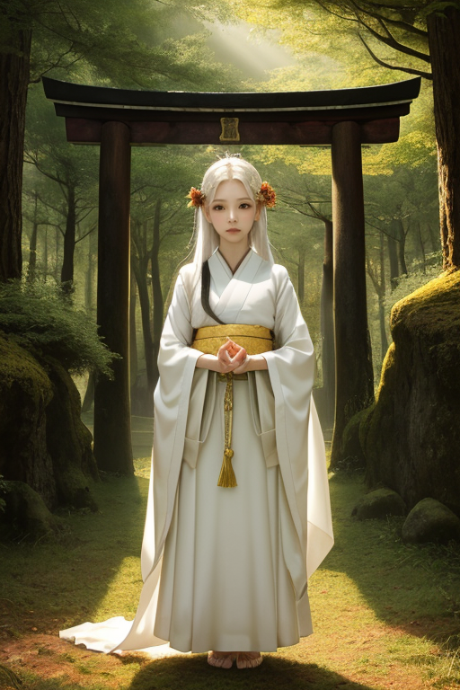
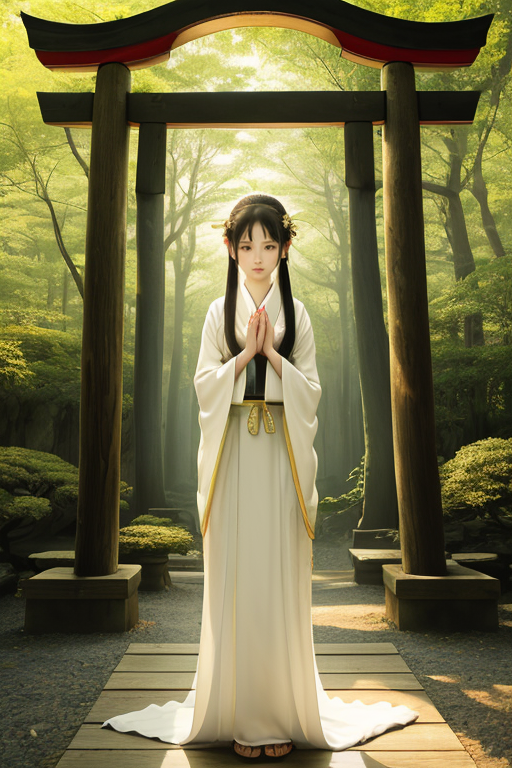

第一章 現実の三重
あなたはまだ気づいていない。この土地にも、王がいることを。
熊野古道の伊勢路。鬱蒼とした杉木立に覆われた石畳は、千年の祈りの重みで滑らかになっている。巡礼者の足音は、山肌に刻まれた微細な歪みを鎮めるリズムの一部だ。その先、志摩の海は真珠のように曇り、波が静かに岩を洗う。ここは境界の地。伊勢の内宮と外宮に挟まれ、山と海が出会い、聖と俗が接する狭間である。
歪みは、この接点に集まる。プレートの境目が、神域の直下で複雑に絡み合う。次の大きな歪みが、いつ訪れてもおかしくない緊張が、森の静寂と潮風の中に張り詰めている。
王は、鳥居の影に立つ。白と金の紋章が、仄かに光る。彼は何も創造せず、何も消さない。ただ、巡礼者の一歩が石を踏む角度を微かに調整し、次の波が岩に砕ける力を一段階だけ緩める。祈りの言葉が風に乗るその一瞬、地中の軋みが、ほんの少し、和らぐように。

第二章 歪みの兆候
熊野古道、伊勢路。巡礼者の足音が苔むした石畳を踏む。その一人一人の歩みが、この地に蓄積される祈りの波長を紡いでいく。王、ミエリア・サンクトゥムは、古道に沿って立つ石仏の傍らに佇み、その波長を感じ取っていた。妖精イセリアが、巡礼者の疲れを癒す微かな風を送る。
しかし、歪みは訪れた。外部から流入する、目的を失った観光の波。バスから降りた集団が、写真を撮るためだけに神域の静寂を乱す。彼らの足元には、コンビニの袋やペットボトルが転がる。それは物理的な汚れ以上に、この地が長年育んできた「祈りの質」そのものを希薄化させる、目に見えぬ歪みだった。
地中深く、プレートの境目が軋む。それは物理的な地震の前触れであると同時に、土地と人との結びつきが緩む、精神的な亀裂の反映でもあった。王は眉をひそめる。彼の役目は歪みの調整だ。だが、この祈りの質の低下が引き起こす精神的な地盤の緩みは、従来の微調整では扱いきれない新たな課題だった。彼は自問する。今、この地に必要な祈りとは。それは果たして、誰のためのものなのか。

第三章 王の葛藤
伊勢神宮の森は、深い静寂に包まれていた。ミエリア・サンクトゥムは、内宮の清らかな流れのほとりに立ち、無数の祈りの残響を感じ取っていた。そこには、かつてのような「畏れ」や「感謝」の純粋な波動は少なく、多くが「利益」や「自己実現」の、ねじれた願望に近いものだった。サンクティアが集める祈りのデータは、その質的変化を冷徹に示す。
「これでは、歪みを増幅させるだけです」
サンクティアの声には、初めて焦りに似た響きがあった。
王は答えた。「彼らは変わった。祈りの形が変わったのだ」
彼の内側で、二つの原理が衝突していた。一つは、あらゆる祈りを等しく神域の一部として受け容れ、調整を続けるという使命。もう一つは、この変質した祈りが生み出す新たな歪みそのものを、拒絶したいという、湧き上がる感情だった。彼は自らの核となる問いを繰り返す。祈りは、誰のため？ 祈る者のためか、祈られる神々のためか、それとも、この土地そのものの均衡のためか。
彼は、鳥羽の海を眺めた。真珠貝が微かに傷つき、その結果として輝く層を形成するように、傷つき、変容する人間の祈りも、この地の一部なのか。受け容れるべきか、拒むべきか。王は、感情という名の未知の海に、初めて足を踏み入れようとしていた。

第四章 妖精との対話
内宮の神域を離れ、外宮の古殿地に立つ王に、主席妖精サンクティアが寄り添った。遷宮のための古材が静かに横たわる空間は、神々の移ろいを感じさせる。
「王よ、あなたは問う。祈りは誰のためか」
サンクティアの声は、森のざわめきのようだった。
「巡礼者は願いを捧げて去る。私たちはその祈りの余韻を、この土地の『歪み』を鎮める緩衝材として用いる。祈りは、祈る者のためでもあり、この列島の均衡のためでもある」
王は黙って聞く。
「しかし、遷宮を見よ。二十年ごとに社殿は建て替えられ、古材は各地の神社へと分け与えられる。形あるものは移り、変わっていく。祈りそのものも、祈る者が去れば、やがて形を変える。私たちが守るべきは、固着した『形』ではなく、この移ろいゆく循環そのものなのです」
ふと、王は理解した。感情というものも、祈りと同じように、訪れては去る循環の一部なのだと。固執せず、ただその流れの中にあればよい。彼は、初めて自らの内に湧く「哀しみ」という感情を、否定せず、流れゆくものとして受け容れた。

第五章 微調整と余韻
伊勢神宮の森に、新しい巡礼の波が静かに寄せていた。それは、古式に則ったお伊勢参りとは少し違う、多様な祈りの形だった。カメラを手にした若者、ガイドブックを片手に歩く外国人。彼らの多くは、神道の深い知識を持たない。王は、その流れを微調整した。道に迷いそうな巡礼者の前に、ふと小枝が落ちる。疲れた足取りの人の傍らで、木漏れ日がほんの少し長く温もりを届ける。それは「正しい」祈りへの導きではなく、ただ、その人が自らの内側と向き合う一瞬の「間」を、ほんの少しだけ守るためのものだ。
鳥羽水族館で、ジュゴンの水槽の前で立ち尽くす子供がいた。その小さな背中に、王はかつての巡礼者の姿を重ねた。祈りは、神仏のためだけにあるのではない。目の前の、理解しがたいほどに大きな存在への畏敬。それは、巡礼路を歩く大人の心とも、本質は変わらない。王は、水槽の水の揺らぎをほんのわずかに整え、子供の瞳に映る光を微調整した。
祈りは、誰のため？ 王は今、確信を持って答えられる。それは、祈る者自身のためであり、同時に、その祈りが流れ込む、この世界全体の循環のためでもあると。彼は感情の流れを受け容れた。哀しみも、安堵も、すべてはこの神域に集い、また散っていく祈りの一部なのだ。
あなたの町にも、王がいる。